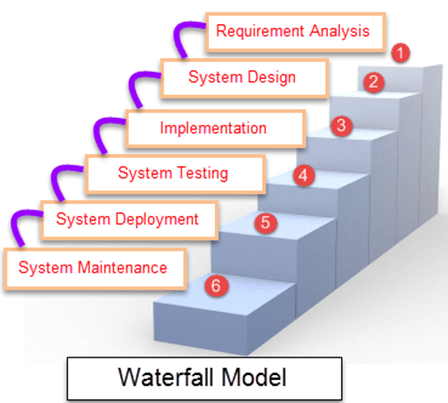
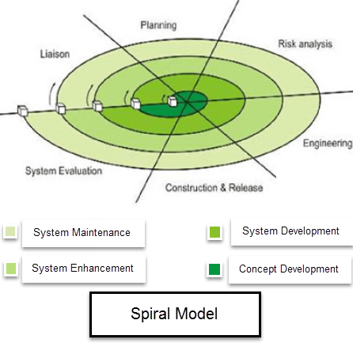
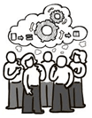

Waterfall Model is a sequential model that divides software development into pre-defined phases.
Each phase must be completed before the next phase can begin with no overlap between the phases.
Each phase is designed for performing specific activity during the SDLC phase.
It was introduced in 1970 by Winston Royce.
The waterfall is a widely accepted SDLC model. In this approach, the whole process of the software development is
divided into various phases of SDLC. In this SDLC model, the outcome of one phase acts as the input for the next
phase.This SDLC model is documentation-intensive, with earlier phases documenting what needs be performed in
the subsequent phases.

Waterfall Methodology can be used when:
Requirements are not changing frequently
Application is not complicated and big
Project is short
Requirement is clear
Environment is stable
Technology and tools used are not dynamic and is stable
Resources are available and trained
The incremental model is not a separate model. It is essentially a series of waterfall cycles.
The requirements are divided into groups at the start of the project.
For each group, the SDLC model is followed to develop software. The SDLC process is repeated, with each
release adding more functionality until all requirements are met.
In this method, every cycle acts as the maintenance phase for the previous software release.
Modification to the incremental model allows development cycles to overlap.
After that subsequent cycle may begin before the previous cycle is complete.
Characteristics of an Incremental module includes:
System development is broken down into many mini development projects
Partial systems are successively built to produce a final total system
Highest priority requirement is tackled first
Once the requirement is developed, requirement for that increment are frozen
When demand for an early release of a product arises
When high-risk features and goals are involved
Such methodology is more in use for web application and product based companies
Spiral Model is a risk-driven software development process model. It is a combination of waterfall model and
iterative model. Spiral Model helps to adopt software development elements of multiple process models for the
software project based on unique risk patterns ensuring efficient development process.
Each phase of spiral model in software engineering begins with a design goal and ends with the client reviewing
the progress. The spiral model in software engineering was first mentioned by Barry Boehm in his 1986 paper.
The spiral model is a risk-driven process model. This SDLC model helps the team to adopt elements of one or more
process models like a waterfall, incremental, etc.
This model adopts the best features of the prototyping model and the waterfall model.
The spiral methodology is a combination of rapid prototyping and concurrency in design and development activities.

When to use Spiral Model?
A Spiral model in software engineering is used when project is large
When releases are required to be frequent, spiral methodology is used
When creation of a prototype is applicable
When risk and costs evaluation is important
Spiral methodology is useful for medium to high-risk projects
When requirements are unclear and complex, Spiral model in SDLC is useful
When changes may require at any time
When long term project commitment is not feasible due to changes in economic priorities
In this type of SDLC model testing and the development, the phase is planned in parallel.
So, there are verification phases of sdlc on the side and the validation phase on the other side.
V-Model joins by Coding phase.
Agile methodology is a practice which promotes continued interaction of development and testing during the
SDLC process of any project. In the Agile method, the entire project is divided into small incremental builds.
All of these builds are provided in iterations, and each iteration lasts from one to three weeks.

The Big bang model is focusing on all types of resources in software development and coding, with no or very
little planning. The requirements are understood and implemented when they come.
This model works best for small projects with smaller size development teams which are working together.
It is also useful for academic software development projects. It is an ideal model where requirements are either
unknown or final release date is not given.